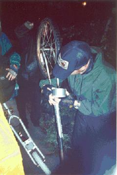
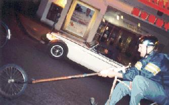

{kind=link}
{kind=link}
{kind=link}
{kind=link}
{kind=link}
{kind=link}
{kind=link}
{kind=link}
{kind=link}
{kind=link}
{kind=link}
{kind=link}
{kind=link}
{kind=link}
{kind=link}
{kind=link}
{kind=link}
{kind=link}

Our trip to Vancouver. How can I describe it? It was possibly the most amazing and enjoyable time that I have ever experienced. I don't have the words to explain it. I can only show some pictures, outline the events of those five days, and mention some of the things that I felt at the time. There is no way for me to convey the dreamy mood that I experienced during the entire Vancouver campaign. Even the sucky parts were only temporary setbacks in an amazing adventure. So I won't even try. I will only attempt to amuse the reader and provide something that we can use to remind ourselves of our carefree youth as we grow old and forgetful.
We had arrived in Vancouver the night before. Today,
in what would become our usual morning routine, we woke up, ate a
large breakfast together, cracked some Canadian beers, and slowly
assembled and repaired bikes in the rain.
Let this story begin by praising the potency, drinkability, and
economy of the beers of Canada. We were happy to help their economy by
buying large quantities of it.
The previous day in Portland, we had disassembled the 22 bikes with
which we planned to destroy Canada and crammed them into a
trailer and some cars. We had just spent
a difficult week building, repairing, and assembling those bikes, also
in the rain. As would have been expected had we thought about it,
some of those bikes would never be assembled in Canada, and would
instead provide crucial parts for more important rides.
This was the day of our warm-up ride, which served as a mutual
introduction between ourselves and Canadian society.
A nice meandering tour through the drizzle brought us to the Molson
brewery. We tried to talk our way in over the intercom, demanding
that they give us a tour, but they wouldn't open the door.
We crossed a bridge, rode around downtown, and ran into Thud, who
had arrived that day and was randomly exploring Vancouver, looking for
us.
One of the Contessa von Denk's fork dropouts broke off. Damn factory
welds! Always
letting us down!
The part of the dropouts that remained had holes in
them for that drilled-out look, and we were able to bolt her wheel
into those. It wasn't snug, but it has kept her bike rolling to this
day. We rode to the sketchy rundown commercial area, and met a
cyclist, Neil, who said he was wondering when we would be showing up.
He could do a no-hands track stand on a derailleur bike.
When we stopped for dinner, Denk had an excellent idea and wrote a number on each person's hand. From that point on, if we weren't sure that everybody was there, we called out our numbers in sequence. This was a much needed organizational aid. We often ride in loose groups, and it takes a while to find and round people up when we get separated. Some of us had to roll their eyes about this excess of planning - if there is anything that we are not, it is a uniform series of components - but the new system let us get moving much faster, and soon it became a fun game. Vik Gerbik got to be One, and started off the count a few times just because he thought it would be an amusing or annoying place to do it, like when we were riding down a busy street in close formation. This at least provided an educational experience for the Canadians. There were always at least 13 of us, sometimes as many as 16, and we had to keep track of what the last number was as people joined or left. There was usually an honorary number on the hand of whatever Canadian was riding with us at the time.
 Enough of the eating and resting, it was time to find an abandoned warehouse that we had been told about. Why? I do not know. Some kids on BMX bikes told us how to get around an ugly stretch of terrain, but first, we had to refresh ourselves with more delicious Canadian beers while repairing our second major breakdown. Silken Thomas's fork had broken at the bottom, where the lower steer tube was welded to a pipe. Luckily, this is a great place for a weld to break, because all of the parts tend to stay loosely assembled, rather than spewing themselves and their rider down the street. We reattached the fork and pipe with an adequate length of duct-tape, which has kept that bike rolling to this day as well.
On the way to the warehouse we encountered a fun ramp thingy. If it was crossed slowly - a challenge for most choppers - it tilted and gently let the bike down on the other side. While we were milling around and riding it for kicks, a guy named Fix rode by, and we demanded that he ride it before he could pass. "It's easy, just take it slow." He coasted up and immediately got his front wheel caught in a groove in the middle, with his face on the cheesegrater surface, his feet stuck in his pedals, and his body twisted painfully. Amazingly neither he nor his bike was hurt, and he salvaged his pride by getting back on and doing it properly a moment later.
Eventually we found the warehouse. Yay, abandoned warehouse. Luckily, it was not inhabited by chud.
While riding home we passed a murky pond by the side of the road. For some reason, we convinced Spidey to ride into it for two dollars Canadian.
After the usual, we eventually got our stuff together and
rode about two miles before Dirty performed an unsuccessful
docking with the Keg Trike, ripping out three spokes from one of its
rear wheels. This was quite a downer, because the Keg Trike is our
supply wagon, and was carrying the tools, most of the beer, and the
karaoke machine. It was
still rolling, just a little wobbly, so we shifted loads to other
bikes and hoped for the best.
The day really began when we stopped at a gas station for some
reason or another and ended up warming up with the first little karaoke
party of the trip. AJ, the Canadian CHVNK, was in excellent form,
apparently drawing strength from riding on his home soil, perhaps also
because he was nominally in command of this expedition by virtue of
being our host and guide.
He showed off his amazing kung fu bike yoga moves - once he curled
his leg back around so that his foot was behind his neck, riding like
that for a block with Vik holding on to it. He also rode
with no hands or feet, and once crashed into Spidey, knocked him off,
and rode away with
his bike without spilling it.
We cruised downhill and introduced ourselves again to the Canadians,
who were happy to hear us yell both "Hello Canada, we love you!" and
"Hello Canada, we own you!", while showing no reaction to "Take off,
you hosers!"
There was some more singing when we found ourselves at the beach. In fact, there was a little singing or dancing whenever we stopped for more than a few minutes, part of the celebratory background that, as mentioned earlier, just cannot be described. Stephen took a swim while we enjoyed the beautiful scenery, the huge ships in the bay, the mountains, the bridge, and the fit Canadian strollers.
Spidey fulfilled his fantasy of being a lifeguard with his beer and various lifesaving transportation devices around him. Soon afterwords, the real lifeguard walked up to us and said that since we weren't supposed to be drinking at the beach, could we please keep our beer where he couldn't see it? In general we had the same minimal interactions with the authorities all week. Yay Canada! Fewer roadragers, too, in general. Because Canada usually let us have our fun we didn't mess up Canada very much. This was a pleasant surprise. We thought that it would be like Seattle, with busybody police everywhere.
Silken was riding a 3-speed that day because his chopper-related knee injury from a few years back was acting up, and he was in general taking on the role of keeping us all rolling - gathering the rear together, swapping parts around, and calling out for a beer when he needed one. Part of that job was herding Dirty around, and at this time his task was to peel him away from the nice elderly Chinese man who probably just wanted a little peace. Dirty says that he unsuccessfully tried to get the guy to ride his bike. Most of us encourage people to try and ride our bikes, but with Dirty it seems to be some sort of universal love communication issue.
After navigating some more streets, we rode through an amazing park full of twisty little passages, all alike, and got a little spread out. Big B. and AJ were talking to three kids at a stream. Spidey zoomed up out of nowhere, embedded himself in the bush next to them, said hi, extricated his bike, and rode off to join yet another dance party that the rest of us were conducting a few hundred feet further.
The kids wanted to impress Big B. and AJ, so they pulled out their BB gun and shot at some ducks. Nobody enjoyed seeing this, of course, and the kids were told off thoroughly. The incident caused something to snap in Big B., and he gave those stupid kids the what for. "Tough kids, shoot those scary ducks!" He started dancing on the rail of the bridge like a chicken. "Look at me, I'm a duck! Why don't you fucking shoot me?"
Enough, the kids were embarrassed. B. and AJ rejoined us and we amused ourselves with stunts in the grass before moving on. As we were starting off, Denk, who was point, rode towards us and told us that someone had shot her in the head with a BB! Those punks had snuck through the bushes during our dance party and had ambushed us! We were enraged, of course, and spread out to find the little jerks. Some ran through the bushes and trees on foot to flush them out, while others rode around the paths to encircle them. It was chaotic, and the sun had set about twenty minutes ago, so it was not a sure thing by any means, even with our numbers. The natives were small and wily, and knew the territory. We were loud, disorganized, mostly drunk, and lost, and the terrain was not hospitable to bicycles. Also, most of us hadn't seen the kids and probably thought that we were after a band of chud or Canadian Nazis or something. People were crashing through the woods, usually chasing each other. Thud lobbed his bike over a fence to explore one area - not an easy thing to do in a hurry, but there was lots of adrenaline going around. I wondered whether it would be more fun if the kids were caught or if they got away.
Eventually Spidey and Denk spotted the tykes and gave chase. They saw them run into a building and pursued them into a basement corridor. The kids were always just out of sight, but they followed the sound of a slamming door and reached a bathroom, where they found two of the boys trying to hide in a toilet stall. As they cowered in front of him, Spidey was almost at a loss for words, which is understandable. It's hard to imagine why these morons thought it would be fun to mess with a close-knit group of 13 chopper riding ugly Americans. "What the FUCK were you thinking? Do you have any idea who we are?" He patted them down, but they didn't have the gun - that boy had split off and gotten away. The kids said that they hadn't done any shooting, their crazy friend had done it. "He has ADD!" Stupid Canadian kids. Spidey gave them a stern talking to and told them to get the heck out of there, and he and Denk rejoined the group and told the rest of us what had happened.
We didn't like getting angry at Canadians, even stupid punk kid Canadians, and we would have liked to have been able to break their BB gun, but it was a fun adventure and nobody got hurt, and nobody even threatened the kids.
We rode on, ran into some more arrivals from Portland, and had some more breakdowns. Thud's front axle snapped, but we moved some locknuts around from other bikes and it was more or less rideable. Granddaddy's stem broke! Not too surprising that something would happen to that bike, since Spidey was riding it and he breaks everything, but still, a stem! Major! We gave him the helmet and duct-taped the pump to the fork and handlebars, and that worked for a while.
A mile or so down the road we saw an abandoned bike and stopped to harvest some needed parts. We cruised up onto the sidewalk next to the shopping cart fort of a pair of homeless people, just as one of them was screaming, "Come back here, you asshole! Help me break this up!" It was obvious that she was an addict of some kind, not only from what she said, but from the way that she said it - she sounded like she was would be unable to feel any way other than utterly shitty until she got her fix on. So as not to disturb this depressing scene, we shuffled over to the square on the corner, which I think was called Pigeon Park.
Silken started looking over the bike while we tended to our needs and lounged around. Within minutes the space cushion caused by our arriving and crashing into each other by way of stopping began to dissolve as the more curious and alert of the locals inched towards us. Some of them were looking for something that we clearly didn't have and were shooed away, but others were just interested. We heard the usual stories about childhoods on chopper bikes. Dirty made quick friends with someone and put him on Humpty. After a few false starts, the guy sped off around the corner and disappeared. I was thinking, oh well, guess Dirty's walking the rest of the way, and took a final picture. Libby sped off a few seconds behind Humpty and trailed him, so things were in control. The guy didn't have any bad intentions, anyway, he just went around the block and showed up a minute later. He must have been overcome by the sudden chunk feelings that the bike gave him and thought nothing of immediately zooming out of sight as soon as he could.
After this incident we thought we should go somewhere calmer and moved along a few blocks to pile the bikes around a statue ("Gassy Jack"). The character of the neighborhood changed drastically - there were stylish young people, ravers, clubbers, jocks, tourists, etc. Weird.
Silken walked back to the abandoned bike and dragged it to where we were. He said that the scene back at Pigeon Park was all different people, same action. Someone was passed out in the gutter, and a cop was in his car, hoping that he wouldn't have to get out and fill out paperwork if the guy was dead. While Silken was picking up the bike, a man was standing in the street with his shoe in his hand, yelling, "I found my needle! Bend over!" Silken took this as his cue to hurry up and leave.
We got some important parts from the bike, including a wheel for Thud, and we were proud to be plundering Canada's precious resources. Unfortunately, the stem didn't fit Granddaddy, and it was only after we had taken off our jerryrigged splint that we realized that we had lost the roll of duct tape. I walked back to Pigeon Park to look for it. It was quite interesting to be walking in that area alone and visibly looking for something - it changed the way that people interacted with me. I got some people offering to sell me drugs, and lots of people just looking back at me querulously, apparently hoping that they could perform some kind of transaction with me. No duct tape, anyway, so Spidey rode without handlebars for a long time, just holding onto  the pipe of Granddaddy's fork. This is pretty damn amazing - that's a heavy steel tube with nothing to get a purchase on. Uphill, downhill, it didn't cramp his style much. I still barely believe it. Try it someday, you'll see how hard it is.
We wanted to see an opera that some cyclists in dinosaur costumes were performing under an evil sphere that symbolized Canada's lust for technology, so we counted off and rode. We missed the opera, but we hung around afterwords and let people ride our bikes. Lucy wasn't feeling well, so I didn't talk much with the locals, but we had some nice quiet time with others of our group, remembering the evening, spitting in the bay. Lucy and I ended up locking our bikes (after cannibalizing out some important parts - Granddaddy finally got a stem) and taking a cab home. Ah, the privileges of being urban and being able to afford a ride when we need it. We counted off one final time, and then watched the rest of our group ride off into the night. It was a beautiful sight, seeing a shadowy group of riders, all different sizes and shapes, riding away from us towards home.
Today was the day of the bikesummer chopper construction class thing. Unfortunately, most of us were very hungover, tired, and not at all outgoing, especially at first. We showed up, unpacked some bikes and tools and beer and crap, said hello, and then kind of sat around and fell asleep or talked amongst ourselves. Hopefully we weren't completely rude, especially seeing as most of the Canadians that we had met were pretty friendly and happy all of the time. Anyway, soon enough we started fixing our own bikes and sharing our tools and beer and mingling a little. The people with initiative jumped into it, we helped them out, and eventually people got more or less greased.
Canadian Paul fixed the crack in Plopulator's fork. We knew that it would break again, and sure enough, within 24 hours there was another crack right next to the old one, but it lasted the trip.
Some of the Canadians got close to finishing their bikes, and Big B. and Häng got excited about getting them done, which was really nice. The organizers gave them T-shirts the next day for being so helpful, which was also really nice.
Eventually we gathered up our crap, thanked the Canadians for their hospitality, and left.
Later that night, Thud wanted to go back to a messenger party on the other side of town that he had visited while the workshop was going down. Big B. and Silken (who "had not gotten properly shit-piled" the whole trip) joined him. Eventually they found themselves on some sort of main drag and stopped for a drink at a random bar. Canadians sell pizza by the slice at 88 cents Canadian! That’s like fifty cents U.S.! The trio was forced to move on at 11, when Canadian bars close (!). After a long ride they realized they were within a block of the empty warehouse they had visited two nights before. Strangely, the giant loading dock doors were closed. Thud and Big B. opened one up and the three boys peered inside and saw movement. "Hello!?" cried Big B. A voice boomed from within, and the three were greeted by this guy who’s name cannot be recalled, Kit or Kip or something like that. His name wasn’t important because he carried a quarterstaff.
He said that the warehouse was his home, which he shared with one other transient. He lived up in a little loft at the far end. From there he and his friend kept the junkies and prostitutes out of the place, for which the railroad cops apparently left them alone. He told us we were free to sleep on a nasty mattress. He also said that he had a little BB gun with which he once shot some dude in the ass while the dude was screwing some whore. He says the guy threatened to call the police and all this shit and Kip or Kit or whatever was like "you’re gonna call the cops on me? You? Who’s the one cheating on his wife and kids and screwing some crack whore in a warehouse down by the tracks?" Lessons on morality from the quarter-staff wielding gatekeeper of the abandoned warehouse.
Last day in Vancouver! We were sad, but also tired. We went to the
bike olympics, which were pretty slow by the time that we arrived,
but we got to see our
Canadian friends again.
Ten or so bikes started pulling a chariot around a track, which
aroused my
derby instincts. I jumped on Plopulator and rammed the chariot from
behind, trying to spice up their ride. I was only moving about 5 MPH
(approx. 8 KPH Canadian) faster
than it was, but they all stopped and asked each other if
everybody was all right until I went away.
There was not much left to do except thank the friendly Canadians and leave. We borrowed their velo-love stencil and spraypaint and decorated most every item of clothes that we had with us, totally saturating the stencil in the process. We gave them some hash that we were afraid to try and smuggle back, and started the drive home, which completely sucked. One car broke down twice over the course of 2 days. Another car's axle broke, the wheel popped off, and the sparks from the chassis scraping the freeway started it on fire. Everybody eventually got back OK, but we were all sad because we had to live our normal lives in Portland again, not getting drunk every day and riding together in Vancouver. We joined up once we all got home and decompressed, counted off for the last time (surely the last time that that particular combination of riders will be together at once), shared a final Canadian beer, and moped home.
| Copyright 2003 Megulon Five <megulon5@dclxvi.org>. |

|
This work is licensed under a Creative Commons License. | Last modified 26 June 2003. |
{kind=link}